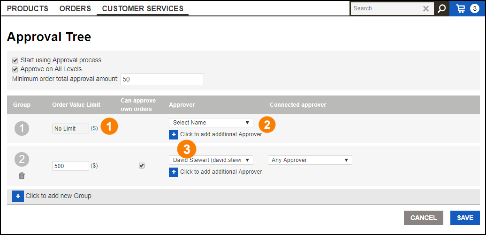

|
<< Click to Display Table of Contents >> Navigation: Customer Services > Approval Tree |
On this page, you can configure limits for order approvals. You can specify multiple users as approvers, add new groups to define additional limits, and specify other approvers for orders that exceed those limits.
At the top of the page, take note of these items:
•Start using Approval process – check this box to enable the approval feature.
•Approve on all levels box – check this box to require approval from all approvers in all groups.
•Minimum order total approval amount – Enter the value that will trigger an approval. If the total amount of any order meets or exceeds this amount, an approval will be necessary by the user(s) in Group 1.
Saving/canceling: Remember to click the Save button to commit your changes; click Cancel to discard any changes since the last save. |
Continue reading below to see how to manage approvers and groups.
To add the first approver, do the following:
1.First, it's important to realize that the Order Value Limit for the first group is No Limit. This is because an approval is necessary for any orders whose total value exceeds the value of Minimum order total approval amount at the top of the page.
2.To add an approver, choose a user from the drop-down listing.
3.To add another approver, click the small + button below the drop-down and then choose a user from that drop-down listing. Similarly, you may continue to add more approvers.

To add a group, do the following:
1.At the bottom of the group listing, click the small + button to display a template for a new group.
2.Specify the Order Value Limit. Any order submitted with a total value that meets or exceeds this limit will require approval by the approver for this group.
3.Choose an approver from the drop-down listing.
4.If appropriate, check the Can approve own orders box to permit this user to self-approve any order.
To remove an approver from any group, click the small trash-can icon adjacent to the approver name.
To remove an entire approval group, click the small trash-can icon below the group number.